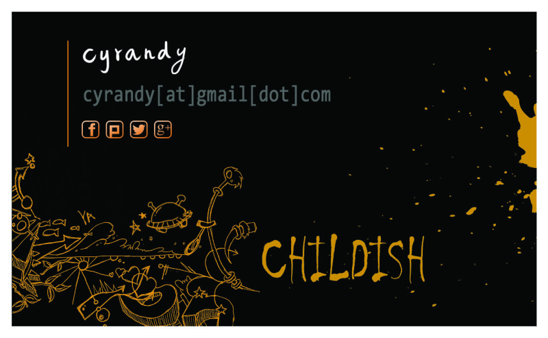
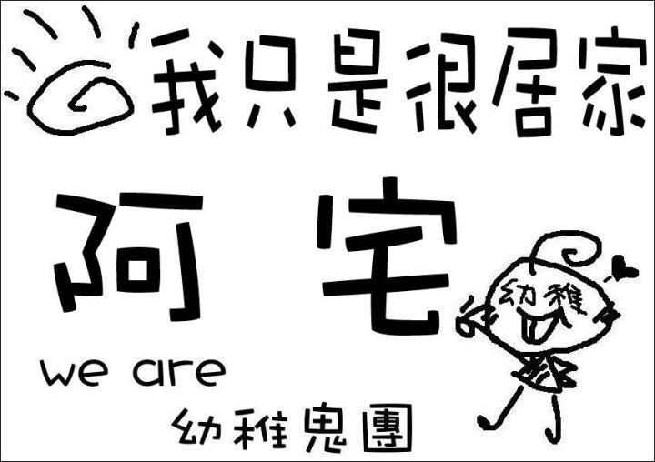

幼稚鬼團基金
幼稚鬼團基金是由幼稚鬼團團員自主性捐贈形成的小額財庫，主要用來支付有關幼稚鬼團相關服務的成本，目前支出主要是在 childish.tw domain的費用。財務主要由團長進行保管，目前尚無另外開戶，僅簡單的使用紅包袋裝好，藏在某個神秘的小地方。有關這筆基金的使用作業，都使用Google Sheets 記錄並且公開，相關資料如下：
Sub-domain
於2013年12月21日，幼稚鬼團購入 childish.tw 的網域，開放申請 *.childish.tw 這個煞氣的網域，供團員使用，團員可以到下列的表單進行申請。
Gitlab
這是一個目前在封閉測試中的服務，由Davy（喜德）提供。
Name Card
在2012年8月，當年COSCUP前一周，幼稚鬼團心血來潮的想要製作屬於我們自己的團名片，此想法一提出，就由主揪瞬生，隨後再當月13日於團版詢問跟團訂購，14日由團長送印，並在16日印刷完成，熱乎乎的名片就出現在COSCUP了呢！目前擁有團名片的團員有cyrandy, davy, freetsubasa, scwuaptx, sntc06, swl, xatier 七人，據說只要收集全套名片就可以召喚神龍了呢！
這款名片的特色是在於個資只有 慣用ID、暱稱、Email、Social Icon！慣用ID、暱稱是由主揪利用手繪板親手寫出，字體獨一無二；Email採用暗灰色系，並且將「@」和「.」替換成「[at]」、「[dot]」，增加開發者的浪漫與氣質；並且將有在使用的社交平台圖示，以同名片色系重製，小巧可愛出現在平片上，總共提供 Facebook、Instagram、Google、Twiiter、Plurk 的圖示！最後在右下角洋洋灑灑的寫下CHILDSH，展露出本名片自我幼稚風格的特色！

目前團名片製作已絕版，歡迎想要擁有自己團牌的夥伴自行山寨。若需要團名片的psd檔，請私下找團長索取。
Name Sign
自之前2009年團牌誕生以後，在2011年寒假的電資研創寒訓「ee不捨，百年資約」時，出現了大量團牌的降臨在東勢林場。幾乎每個團員都擁有了一個自己的團牌，在每個團牌上還會有一個屬於自己特色的稱號，例如 sntc06（雪人）大大的團牌，上面寫的就是「融化中請稍等」，非常有趣！之後這些團牌的圖檔也全部釋出在幼稚鬼團FB Fans Pages的相簿上，有興趣的團員們可前去觀看，若是當年製作得團牌遺失了，就快點自行重新印製著個幼稚到無法自拔的團牌吧！XDDDDD
目前團牌製作已絕版，歡迎想要擁有自己團牌的夥伴自行山寨。
